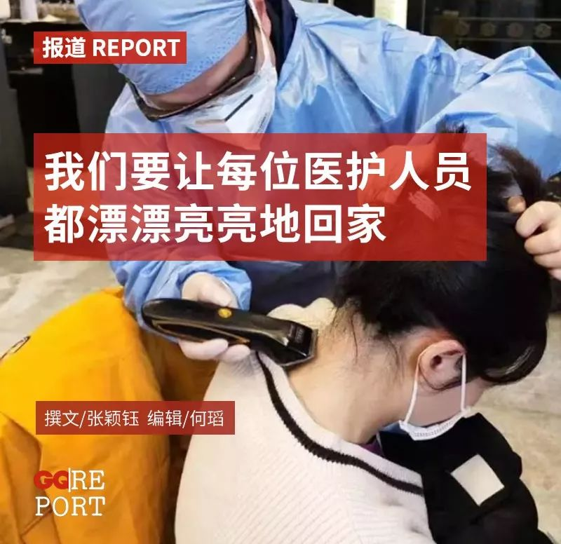
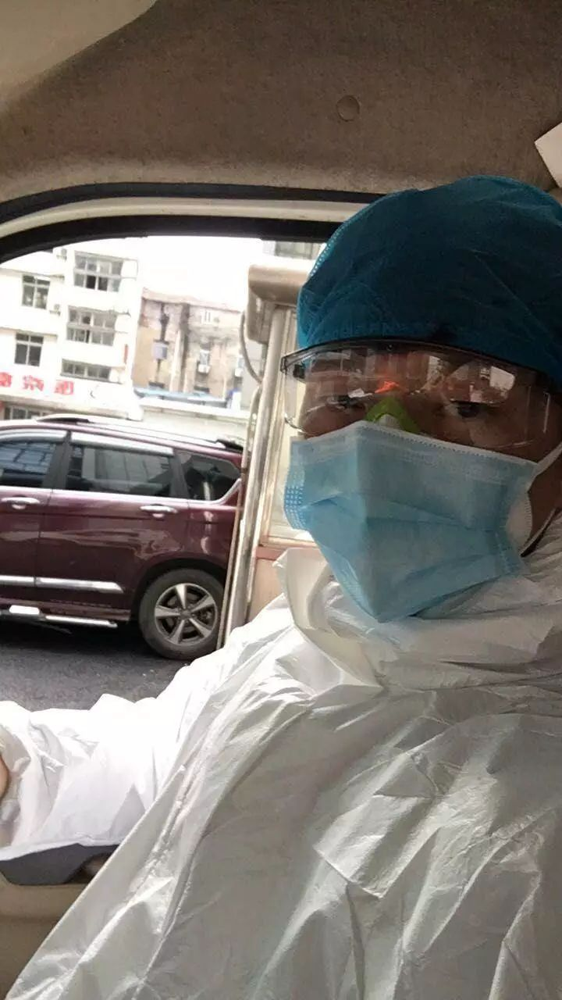

这些医护防护服上的字，第一张就戳心了
原文链接 备份链接 澎湃新闻综合报道 新冠疫情发生以来，为了方便沟通交流，医护人员在背后写上名字，互相打气。 这些防护服上的字，如无声的誓词。 我们虽然看不见你们的脸庞，却从这些字里看到了希望。 “此行是为救治病人，不达目的不撤兵”——她 …

对疫情一线的医护人员而言，理发是一项迫切的需求。头发太长，工作不方便，穿着防护服全身汗湿，还有沾染病毒的风险。接到来自医院的需求，一些理发师从武汉的各个角落出发，到医院或是医疗队驻扎的酒店，免费为医护人员理发。
在每人十几分钟的理发时间里，理发师听着医护人员自己的故事。疫情和家庭是常见的话题，理发师听医生谈过重症病例的遗憾，也见过护士聊起孩子时通红的双眼。有位理发师在日记本上写，“在边剪边聊的过程中，发觉她们都是平凡而伟大的人。”他心想，一定要让每个人都漂漂亮亮地回家。
···············
除夕夜，封城后的武汉街道行人寥寥。甘书爽独自开车回郊区老家，边开车边流泪。
他刚刚结束工作，把病人从发热门诊扶到病房。诊室里人挤着人，有人站着打吊瓶，有人躺倒在地，几个护士跑前跑后，配药，换药，打针。烟味、汗味混杂着消毒水味蔓延开来，甘书爽的护目镜上糊了一层水雾，他低着头，看不大真切，只能听见哭喊，“怎么这么慢啊”“护士怎么还不来啊”。
甘书爽是一名救护车司机，开一天车休两天，闲时和妻子在小区开了家理发店。医院不放假，除夕夜和家人小聚后，甘书爽又独自开车回市区工作，妻子和孩子留在老家过年。理发店不开门，休息那两天，他一个人闷在房间里，打两局王者荣耀，觉得没意思，放下手机，又忍不住想疫情的事。1月31号晚上，他刷朋友圈，看见有人招志愿者给医护人员理发，没想太多，在底下留了句“我可以啊”。
那几日，武汉城里不少理发师都接到了医院打来的电话：医护们头发太长，戴防护帽头发露出来，有交叉感染的风险，能不能来帮我们理个发？一位负责对接理发需求的志愿者称，每天要收到5、6个医疗队的理发需求。援汉医疗队有上万人，能出动的理发师志愿者只有三四十人，“人手是大问题”。
理发师沈杰说，医生是从高德地图上搜到他的联系方式。电话里，医生告诉他，已经被十多个理发师拒绝过了。

甘书爽在去剪发的路上
刚和朋友说好，甘书爽就有点后悔了。他给妻子发微信商量，妻子态度坚决，“不许去”，万一感染上病毒怎么办？他回，好的，不去。
那天晚上，甘书爽经历了漫长的心理斗争，他想找理由推脱，“跟志愿者说每天要上班，没有时间去”。想来想去，又不安心，觉得答应了别人的事不好不去。
在医院工作，他熟悉穿防护服的感觉，“太难受了”。防护服密闭性强，热散不出去，人捂在里面很快全身汗湿。头发更难处理，碎发露出来，病毒很可能通过患者的飞沫沾到头发上。甘书爽的医护朋友们都在一线，“他们生命都不顾，去抢救病人，剪头发我要是往后退了，感觉自己太胆小了吧。”
甘书爽没再找妻子说剪发的事，第二天早上八点，他装上剪刀、梳子、夹子、电推、围布、吹风机，坐车前往上海医疗队所在的酒店。酒店新贴了招牌，粉底黑字写着“上海医疗队辛苦了”“武汉人民感谢您”。大堂里已经站了不少人，手里拿着号码牌，从1号排到50号，都是等着剪头发的。时间紧，发型没法像平时那样做得精细，洗头、吹头的工序都省了。
像甘书爽这样的理发师志愿者不在少数。理发师刘宽的剪发地点在医院体检中心，医生们腾挪出一小块空地，没有镜子，窗户前面摞着装物资的纸盒。刘宽的防护服没一会儿就汗湿透了，护目镜的镜架粘在脸上，镜片起雾，看不清楚，只能凭感觉剪。

医护人员的要求很简单，要短发，头发垂下来不能超过脖子，两鬓、后颈不能有碎发，刘海也要剃掉。“能戴防护帽”“好打理”是第一位的，其次才是“好看”。有的姑娘爱美，会叮嘱“剪漂亮点”，也有人主动要求剃光头，想着“洗头比较方便”。遇到这样的，理发师宋忠桥会劝她们留点头发，“剃了反而是个坏事，没有头发卡住，戴防护帽反而不容易了”。
一些人的头发有剪过的痕迹，把头发拨开，后颈一片红，密密麻麻都是血点子。一问才知道，以前找不到理发师，为了不露头发，有人用修眉刀刮，还有人用手一根根拔。宋忠桥看着难受，他开玩笑，“你们现在找了个专业理发师，以后就别做理发师的工作了”。
理发师们套上防护服、护目镜、口罩、手套，梳子、剪子、推子也要先放酒精里消毒。防护手套穿过纤长的发丝，不少还留着刚烫染过的痕迹。挑起一缕，剪刀在顶上比划，“确定要这么短吗？”

看着别人剪头发，拿着2号牌的护士抽抽搭搭地哭了。甘书爽猜想，可能是舍不得头发吧。有人把她拉到一边，甘书爽没听清说了什么。回来坐上椅子，女孩不哭了，说要剪一个男式头。“咔擦”，齐肩长发应声而落。
宋忠桥记得一个女孩，二十七八岁的样子，语气轻快，“师傅帮我剪好看点，我要去相亲的！”父母给她找好了相亲对象，本打算春节见面，疫情一来，什么都没顾上。宋忠桥笑着应，但最后没办法，还是得推掉两鬓和后颈的头发，他只好对女孩说，等疫情过去，你的头发也该长起来了。
疫情是绕不开的话题。刘宽总会问起，现在情况怎么样，疫情还要多久才会结束？没人能给一个确切的答案。谈及重症病例，医生们面色凝重，有个养老院送来的老人，各项检查都显示已感染，老人硬是不承认，待在医院不吃不喝。刘宽问，家人不来看吗？医生摇摇头，“不清楚”。医生又说，老年人感染肺炎最危险，一旦引发并发症，人说走就走了。
刘宽问，你们每天在一线工作，家人不担心吗？医生说，哪有不担心呢，每天都打电话。有护士理发时跟家里人视频通话，家人在电话那头笑，医院还有发型师呢，刘宽从椅子后面探出半个头，“嗨”。护士的孩子看起来不到一岁，还不会说话，视频看见妈妈，咯咯地笑起来。护士也笑了：“你一定要听爸爸的话哦，妈妈忙完这段时间就回去陪你们。”
宋忠桥有写日记的习惯，每天都要在本子上记一笔，今天又去给哪里的医疗队剪了头发，剪了多少人，又听到什么故事。从大年初三开始，他已经为13个医疗队剪过发，平均每个医疗队30多人，他要从早上九点忙到下午四点。

宋忠桥日记，“在边剪边聊的过程中，发觉她们都是平凡而伟大的人”。
最开始剪发，宋忠桥总要问一句，家里人同不同意来。陕西医疗队的一位护士说，家里人都支持，只有孩子不同意，哭着闹着要妈妈留下来过春节。护士说，妈妈要去前方打怪兽，怪兽打完了就回来陪你玩，孩子哭着说“好”。护士讲这段故事时，声音发颤，眼圈发红，眼泪看着就要掉下来，宋忠桥赶紧安慰她，“希望疫情快点过去，你们一家人能早点团聚”。
后来，宋忠桥就不忍心聊家庭了。讲到家庭总有人哭，说着说着就红了眼。宋忠桥把剪掉的头发留下来，每次剪好了，医护们还要手拿一缕头发拍张照，发给家人。他承诺，等疫情结束，就邀请医疗队到他店里，免费设计发型，让每个人都漂漂亮亮地回家。大家笑开了，“好啊，我们到时候一定去”。
 护士和剪掉的头发合影
护士和剪掉的头发合影
也有相对轻松的时刻，每剪完一个发型，医生护士围了一圈，“你这个头发还蛮潮流的嘛”。宋忠桥专门为女孩们设计了一款“波波头”，发顶头发留3-6厘米，后颈碎发推掉，前长后短，可以修饰脸型，“就很漂亮”。沈杰在抖音上开了剪发直播，平时理发，手机就放在工作台上。有位护士提到自己明天过生日，“生日快乐”刷了满屏，她笑得眼睛弯起来：“谢谢谢谢！你们一定要去给理发师点赞哦！”
甘书爽刻意避免聊到疫情相关的话题，总觉得心里有个疙瘩，又不敢碰，说多了怕大家都伤心。医疗队的多数人都没来过武汉，有人感叹，以前听说武汉好，想带爸妈来逛逛，没想到这次是以这种方式来。
他兴致来了，讲起武汉的种种好来，说等到疫情结束，一定要逛好了再回去——武汉过早特别丰富，热干面，牛肉面，豆皮，都好吃。那些有名的连锁店都是骗外地人的，刁角巷子里才有你想不到的美味，自家附近熊师傅的热干面就做得好，面条筋道，芝麻酱的口感也醇厚，十块钱可以买一大碗。武汉的景色也好，等到三月中旬，武大的樱花就该开了。从武大凌波门出来就是东湖，要是个有阳光的好天气，湖面会泛起一片波光。
微信提示音时不时响起，妻子又打来视频电话了，甘书爽拿出手机，摁掉，再编个理由回过去，“在打游戏”。他不想跟家里解释太多。有天妻子打电话来，说看到他帮人剪发上新闻了，挺高兴的，不过还是放心不下，“已经做了就算了，以后还是别做了”。他嘴上答应，却还是没停下，想着只要做“三观正”的事情，家里还是会支持的。
每天晚上，甘书爽失眠到一两点。他睡不着，反反复复想起白天的事，是不是有什么防护措施没做好？跟医生一起吃早饭，医生打了个喷嚏，有没有什么问题？今天鼻子不太舒服，该不会染上了吧？他打趣说，自己得了“疑心病”。
疑心归疑心，他还是提早安排好第二天的日程。早上八点出发，一天剪50个人，晚上九点钟结束，坐车，回家。
疫情期间，在这个国家的各个角落，数不清的个人体验正在同步发生。我们希望对这段特殊时期的个人经历加以收集和呈现，以此作为一种记录与见证。图片、文字、视频……任何介质、任何形式的个人记录，都可以发送给我们。您可以选择将你的故事或者想提供的线索发送邮件至gqreport@163.com ，也可以点击阅读原文，在问卷中上传与填写您的答案。

在公众号后台回复彩蛋，送你一个彩蛋
采访、撰文：张颖钰
编辑：何瑫
运营编辑：二水


原文链接 备份链接 澎湃新闻综合报道 新冠疫情发生以来，为了方便沟通交流，医护人员在背后写上名字，互相打气。 这些防护服上的字，如无声的誓词。 我们虽然看不见你们的脸庞，却从这些字里看到了希望。 “此行是为救治病人，不达目的不撤兵”——她 …
原文链接 备份链接 湖南援鄂护士在武汉金银潭医院ICU五日记丨新冠肺炎亲历 2020-02-01 14:32 作者：刘颂辉 来源：中国经营网 本报记者 刘颂辉 上海报道 “在前往武汉之前，我做好充足的准备接受各种困难，然而当我真正融入到武 …
原文链接 备份链接 澎湃新闻记者 邓雅菲 实习生 苏笑语 “在支援湖北行前工作能力摸底时，我得知队友几乎都是有十几年ICU经验的主管护师，而我，除去三个月试用期，正式工龄才两个月，我能胜任紧张的一线工作吗？”飞往武汉的专机上，江西省赣州市 …
原文链接 备份链接 沈杰把为医务人员理发的短视频上传到社交网络，获得了两种意料之外的回应：一种说他“胆子大”，“这种时候还敢到医院去”，另外一种，则是更多医务人员请他帮忙。 对他而言，自己只是偶然接到了一个医生的电话，了解对方困境后没犹 …
原文链接 备份链接 《花冠病毒》8年前出版，很多情形，在现实中，复刻般上演。有人说，这书“神预言”，但作家毕淑敏不这么看自己的作品，她在接受本报独家专访时说：“那真不是我的本意。” 长篇小说《花冠病毒》 2003年，她曾深入北京抗击非典一 …